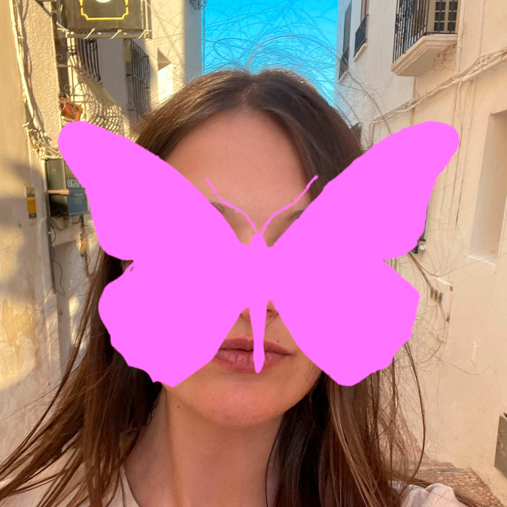

Hola, soy Claudia.
Empecé estudiando Periodismo porque quería contar historias. Resulta que las mejores se cuentan sin palabras.
[ Mi historia ]
Empecé en Periodismo porque se me daba bien escribir y porque nadie me había dicho que existía otra opción. Tres años después, una clase de maquetación cambió el plan por completo. Descubrí Adobe InDesign, me obsesioné, y ahí se acabó lo de publicar noticias. Lo siento, cuarto poder.
Lo que vino después fue bastante autodidacta: miles de horas en YouTube, Domestika a horas intempestivas, un ASUS VIVO-BOOK que aguantó más de lo que debería, y la certeza de que esto era lo mío aunque todavía no supiera hacerlo bien del todo.
He construido desde cero la identidad visual de una marca de moda, diseñado para el departamento de comunicación de una empresa, y hecho webs, carteles y logos para proyectos que merecían verse bien. En paralelo, el Máster en Dirección de Arte en LABASAD — que fue básicamente aprender a justificar con palabras lo que el ojo ya sabía.
Soy bastante autocrítica, bastante perfeccionista, y convencida de que estoy al 10% de mi potencial. Eso no me asusta. Me parece el mejor sitio desde el que empezar.
[ Recorrido ]
El Faro del Bosque
Art Director & Content Creator
Construí la identidad visual de esta tienda de moda femenina desde cero. Identidad, tono, contenido, redes. Todo.
qdq
Diseñadora Gráfica
Creatividades para redes, newsletters, emails, infografías. Dentro del departamento de comunicación de la empresa.
Freelance
2023 hasta ahora
Webs, carteles, logos. Para marcas pequeñas y proyectos con personalidad.
LABASAD
Máster en Dirección de Arte en Comunicación, 2026
Y antes, Periodismo en la Complutense. Que también cuenta.
[ Skills ]
-
Art Direction
Desarrollo conceptos que se convierten en imágenes claras y memorables, capaces de sostener campañas con identidad propia.

-
Brand Identity
Construyo universos visuales coherentes que permiten a las marcas expresarse con carácter y una personalidad reconocible.

-
3D & Visual Experimentation
Exploro el potencial del 3D para ampliar el lenguaje visual y generar imágenes inesperadas con un enfoque experimental.

-
Editorial Design
Diseño narrativas visuales donde imagen, tipografía y ritmo editorial trabajan juntos para construir significado.

Trabajo con Photoshop, Illustrator, Blender, Midjourney y todo lo que haga falta. Pero lo que más uso sigue siendo el criterio.